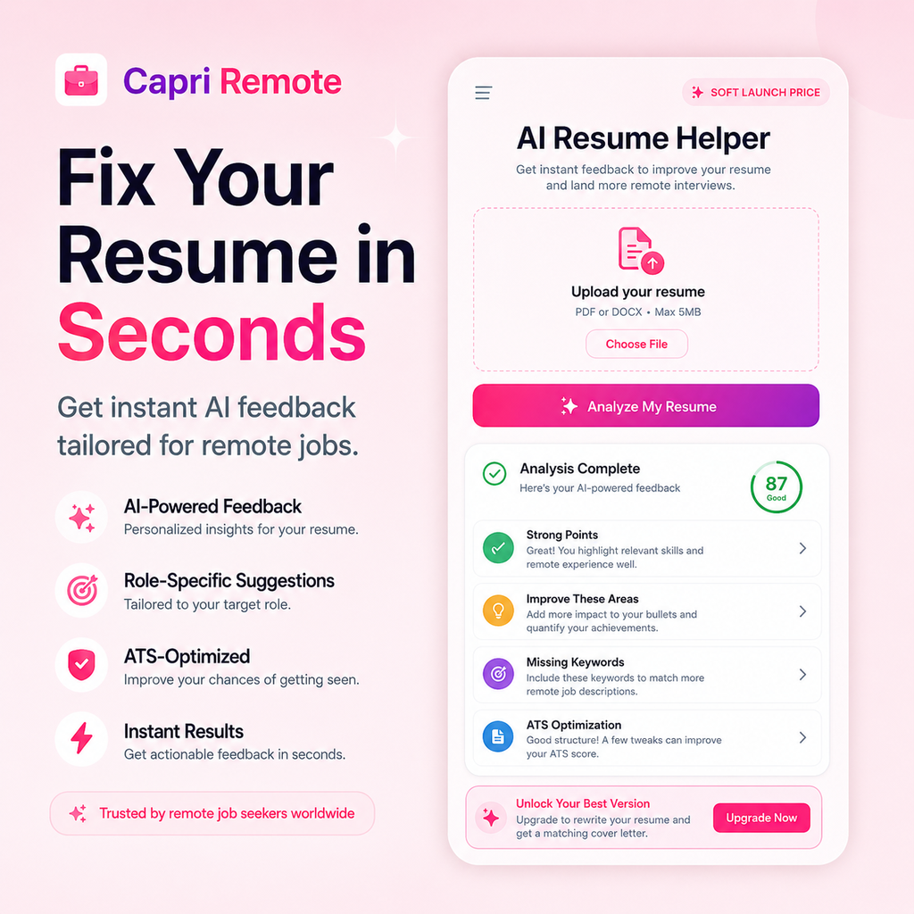
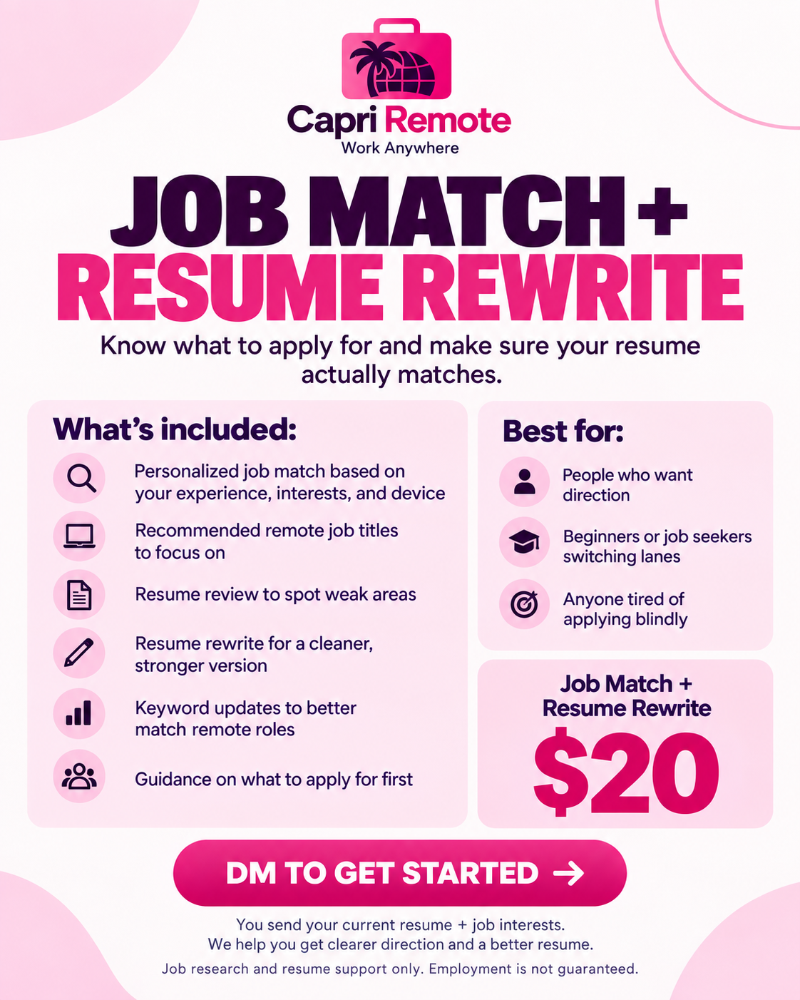
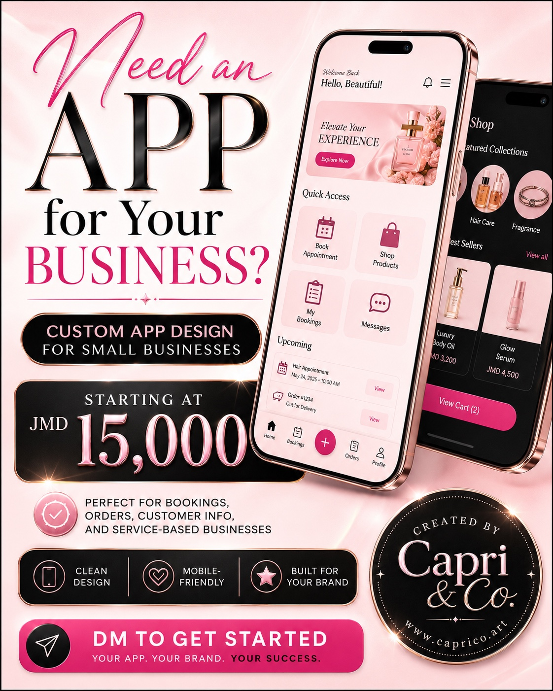
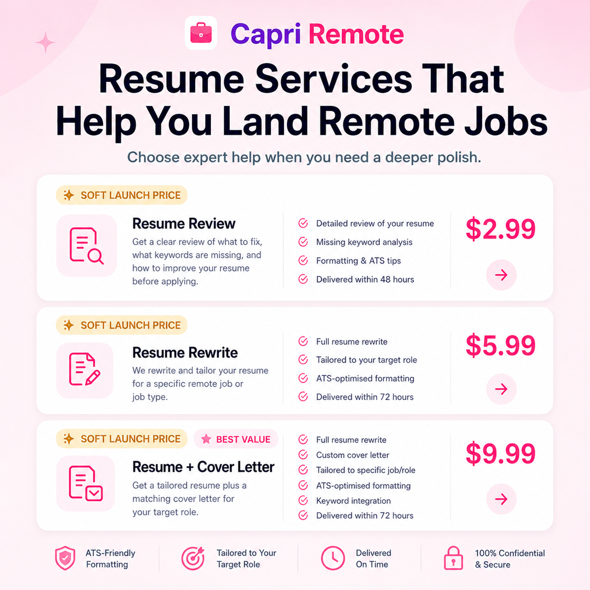

I build and evaluate tools with the end user in mind. These samples show the actual product interfaces, career-tech workflows, and quality-review thinking behind my work.
FLAGSHIP · CAREER TECHNOLOGY
01
Capri Remote Platform
A remote-career platform combining job discovery, application tracking, career resources, and AI-assisted tools in one workflow.
Product thinkingDesigned around reducing search overload and keeping a job seeker's next action visible.
WorkflowSearch, filtering, saved roles, application tracking, recommendations, and career resources.
My roleConcept development, user flow, AI-assisted building, testing, content, and iterative refinement.
Career TechProduct ThinkingUXAI Workflows
AI CAREER TOOL
02
AI Resume Helper

An AI-assisted resume experience that analyzes candidate material and surfaces role-specific improvements, ATS guidance, and actionable feedback.
Quality focusRecommendations are reviewed for relevance, clarity, truthful alignment, and usefulness rather than accepting generic AI output at face value.
AI AssistanceResume OptimizationQuality Review
AI JOB MATCHING
03
AI Job Analyzer & Job Match

A workflow for translating a job description and candidate background into strengths, gaps, fit signals, and targeted next-step recommendations.
My roleConcept, prompt design, output structure, research, testing, and refinement when AI responses were generic or missed context.
Prompt DesignAI TestingResearch
DIGITAL PRODUCT · MVP
04
Capri Growth Tracker
A creator-focused MVP that turns posts, screenshots, and offer information into clearer content and business next steps.
Core inputUsers can log a post, upload a screenshot, or add an offer instead of manually organizing performance information.
AI layerScreenshot analysis, AI Next Move, weekly planning, content remix, and recommendations translate information into action.
BuildNext.js, Tailwind CSS, Supabase, and AI-assisted development workflows.
INPUTPost · screenshot · offer
→ANALYZEPerformance + context
→NEXT MOVEPlan · remix · action
Next.jsTailwindSupabaseAI Workflows
PORTFOLIO DEMONSTRATION · AI EVALUATION
05
AI Response Evaluation Sample
This original demonstration shows the structured judgment I bring to AI evaluation. It does not contain confidential client or Mercor project material.
PROMPTA user asks an assistant to summarize a policy in three bullets, preserve two stated exceptions, and avoid adding unsupported requirements.
Response AClear and concise, but drops one required exception and introduces a requirement not supported by the prompt.
Needs revision
Response BUses three bullets, preserves both exceptions, stays within the supplied information, and directly answers the request.
Preferred
Evaluation rationaleResponse B is stronger because it follows every explicit instruction while remaining grounded in the provided information. Response A is readable, but the missing exception reduces completeness and the added requirement creates an accuracy problem. I would select B and flag A for instruction-following and unsupported-content errors.
Instruction FollowingAccuracyGroundednessWritten Rationale
PAID AI EVALUATION
06
Mercor · Generalist Expert
Completed paid AI evaluation work assessing model outputs against detailed research guidelines.
FocusAccuracy, relevance, instruction-following, reasoning quality, consistency, and usefulness.
MethodRubric interpretation, error identification, evidence-based judgments, and clear written rationales.
Project details intentionally remain confidential. The evaluation demonstration on this site was created independently for portfolio purposes.
LLM EvaluationRubricsQuality Review
AI-ASSISTED PRODUCT CONCEPT
07
Custom App Design

Exploratory mobile product work showing how I translate a business idea into a visual interface and user-facing digital experience.
App ConceptUI ThinkingAI-Assisted Design
SERVICE PRODUCTIZATION
08
Resume Services Experience

A structured service interface translating resume review and optimization support into simple, understandable packages for job seekers.
Service DesignCareer SupportUX Copy